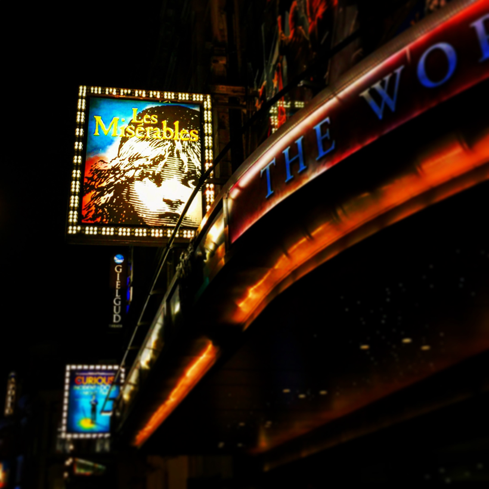
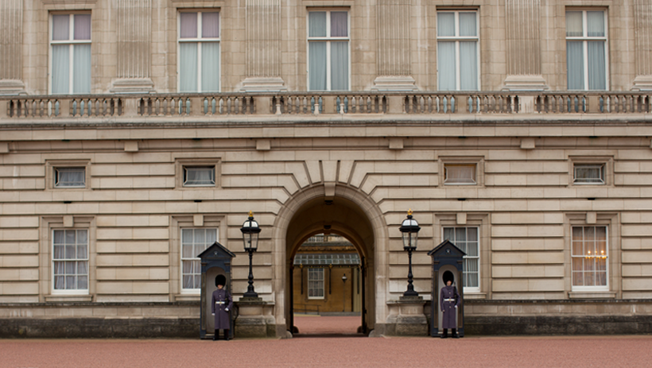
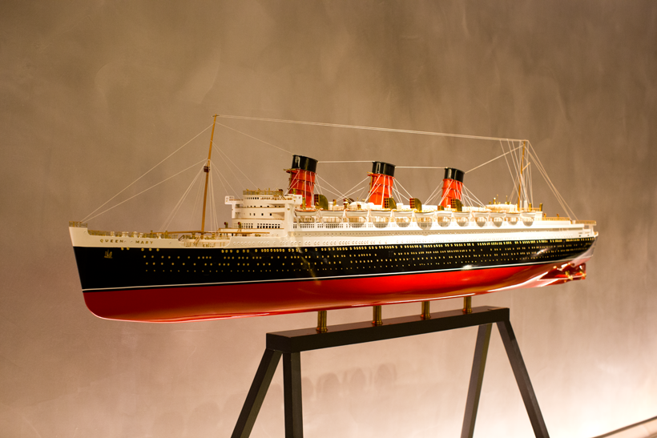

Things to Do: (London and slightly outside of London)
* Show or event at O2 Arena - We saw Roger Federer play Djokovic in the ATP Finals. Such a great night!
* West End Show -- Les Misérables is my pick! This is my TOP thing to do in London. You simply have to check out this amazing cast lead by Peter Lockyer as Jean Valjean. Plus the theater is gorgeous. We actually sat in the front row because I love the front row, even if the view is a bit skewed. I loved seeing Les Mis use a spinning stage too. One of my fave musicals of all time and you just really have to see it if you are lucky enough to visit London.
* The London Tower - Historic spot that is a must-see! It doesn't take that long to see everything, but it really is an amazing place to visit.
* The London Eye - We skipped this. But it would be fun if you were in a big group of people or maybe in a warmer season.
* Kensington Gardens Stroll - Beautiful! One of my favorite spots in London. I love the trees, the winding paths, the fresh air, the swans!
* Explore Soho - Walk around this shop-filled, cobblestone street neighborhood.
* Buckingham Palace - fun to gawk outside the gates with all the other tourists.
* Harrod's - Classic London, via a giant store. A must see.
* River Boat Ride - Thames Clippers - The boat transportation system in London is incredible. Such a joyful, relaxing way to get around. We took this boat to the O2 arena! and back again.
* Take the Tube - Easy, fast, clean. Cheaper than a black cabby!
* Museums - There are sooooo many to see. Here are just a few.
* Royal Albert Hall - Beautiful to view from the outside and catching a show inside would be amazing. We missed this, but maybe next visit.
* Shakespeare's Globe Theater - You can see it from the water if you take a boat, but any Shakespeare fan will want to check this out for an afternoon.
* Seasonal Christmas Markets - If you visit in late November or December you will be in for a treat with all the festive fun on display at Christmas Markets.
* Ice Skating - Somerset House
* Visit Windsor Castle - Located near Heathrow Airport, this castle looks like a fairytale.
* Visit Stonehenge - I saw Stonehenge on my last UK trip. It is right off the road. It only takes a quick stop to check it out. Pretty amazing to see it first hand after seeing photos of it my entire life.

Highlight.. seeing one of my fave musicals, Les Misérables. In London..

Buckingham Palace guards..

This Titanic replica, in the lobby at the Mondrian..
Back To Home
What To Eat
Where To Stay
My Visit To Chelsea Football Club Stadium